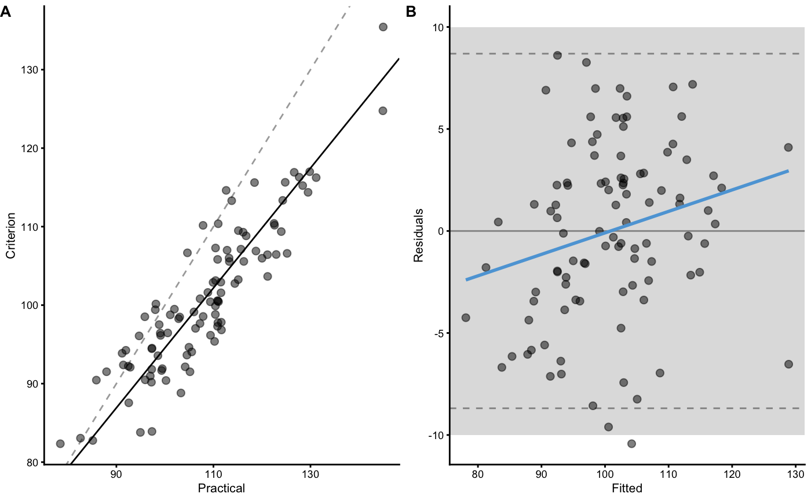

This function is used in reliability and validity visualization
plot_pair_OLP( predictor, outcome, SESOI_lower = 0, SESOI_upper = 0, confidence = 0.95, predictor_label = "Predictor", outcome_label = "Outcome", fitted_label = "Fitted", residuals_label = "Residuals", control = plot_control(), na.rm = FALSE )
| predictor | Numeric vector |
|---|---|
| outcome | Vector |
| SESOI_lower | Lower smallest effect size of interest threshold |
| SESOI_upper | Upper smallest effect size of interest threshold |
| confidence | Default is 0.95 |
| predictor_label | Character vector. The name of the |
| outcome_label | Character vector. The name of the |
| fitted_label | Character vector. The label to be used for fitted. Default is "Fitted" |
| residuals_label | Character vector. The label to be used for residuals. Default is "Residuals" |
| control | Plotting control object returned from |
| na.rm | Should NAs be removed? Default is |
ggplot object
plot_pair_BA for Bland-Altman plot and
plot_pair_lm for lm residuals plot
criterion <- rnorm( n = 100, mean = 100, sd = 10 ) practical <- criterion * 1.2 + rnorm(n = 100, mean = -12, sd = 5) plot_pair_OLP(practical, criterion, SESOI_lower = -10, SESOI_upper = 10, predictor_label = "Practical", outcome_label = "Criterion" )